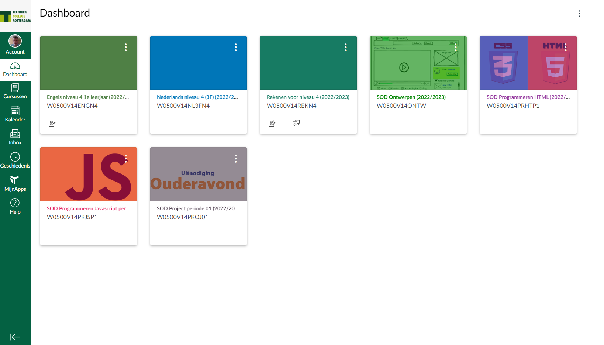
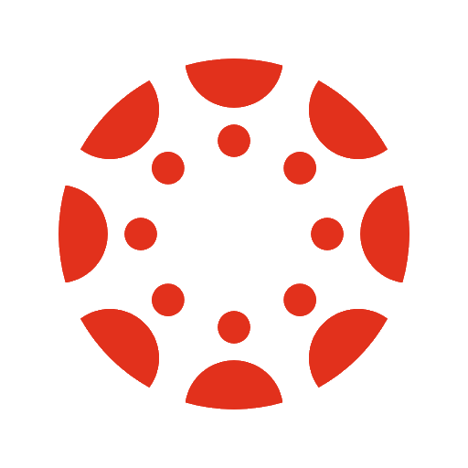
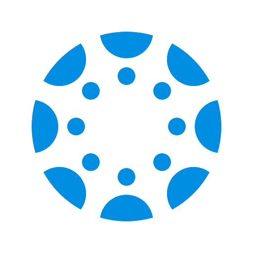

Online Omgeving
Canvas
Canvas wordt door school gebruikt door de school om en uitleg te geven en om opdrachten te publiceren zodat de studenten dit kunnen inleveren.
Per vak een Tegel
Elk vak heeft zelf een eigen tegel in canvas Dit is makkelijk en overzichtelijk
De Canvas kalender
De Canvas kalender is zeer handig om te zien wanneer iets af moet zijn maar dit is alleen handig als er in de opgave een einddatum vermeld staat.
Hier een afbeeling van de kalender.
Canvas student en ouder app
 
Canvas heeft ook apps.
De student app heeft eigenlijk de zelfe funtcie als website.
De ouder app is momenteel niet functioneel.
Software
De software die op school wordt gebruikt Is gratis, als er een betaalde optie voor is wordt altijd de gratis versie gebruikt. en dingen zoals Office worden door school betaaldt. Er is eventueel ook nog meer microsoft software beschikbaar.
EduArte
In EduArte is het mogelijk om het rooster te zien. Ook is het mogelijk om de Examenresultaten te zien. Je kan in EduArte via de de website.
Of via de EduArte studenten app. Er is geen apparte toegang voor de ouders. Verder kan via hier ook de aanwezigheid gezien worden.
Hier een paar screenshots van de EduArte student app: